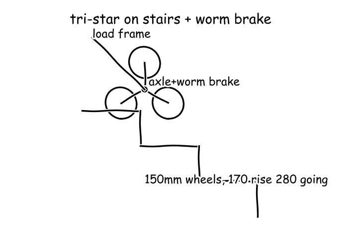

Meeting 1
● Mara — Stair-Climbing Mechanism Engineer● Tomas — Human Factors and Safety Engineer● Lena — Lightweight Structures and Folding Design Engineer● Dario — Courier Operations and Serviceability Lead● Manager (process lead)
Cycle 1
Function F1: Lift and lower 60 kg load step by step on stairs with one operator
Function F2: Hold load on stair slope without continuous operator grip force
tri-star wheel cluster: two side clusters each with 3 wheels of 150 mm diameter on rotating arm for stepping over 160-180 mm risersC1 for F1self-locking worm drive plus pawl on tri-star axle: holds cluster without hand grip, hand crank releases step by step for descent controlC2 for F2assumed_constraint: design stairs riser 170 mm tread 280 mm stair angle about 31 deg based on residential range 150-190 mm riser 250-300 mm treadC3 for F1E10 energy to lift 60 kg one riser: 100 kg⋅mE11 energy to lift 60 kg one riser in joules: failed: the units did not matchE12 energy to lift 60 kg one riser in joules corrected: 100 JE13 tri-star cluster torque with total mass and radius: 184 m⋅N

Searched “residential stair riser tread dimensions standard 170 mm building code” → 3 sources on the board
Searched “tri star stair climbing trolley 150 kg wheel cluster dimensions” → 3 sources on the board
- E4 · Steel Stair Climbing Sack Trolley with Solid Rubber Wheels (150kg Capacity) (tradeproductsdirect.co.uk) link
- E5 · Draper Heavy Duty Stair Climbing Sack Truck Trolley - Brand Supermarket - compare prices on all your favourite brands (brand-supermarket.com) link
- E6 · Staircase trolley 3-star solid rubber wheels fitted with plastic rims and roller bearings make it easier to perform the (marketplacemedia.witglobal.net) link
Searched “self locking worm gearbox hand winch brake holding load” → 3 sources on the board
Full message
The tri-star wheel cluster (C1) fits normal stairs and proven trolleys, as drawn in the side view sketch of the cluster on two noses (E14). Small wheels roll on flat and arms step over each nose. Rises of 170 to 220 mm (E1), rises of 150 to 170 mm (E2), and rises of 150 to 190 mm with treads of 250 to 300 mm (E3) support the assumed stair of 170 mm riser and 280 mm going (C3). Existing trolleys use 150 mm wheels with 60 kg on stairs (E4) and 160 mm wheels (E6). Lifting is one small lift per step but axle torque is large, shown by the 100 joule step energy (E12) and the 184 newton metres cluster torque (E13). Each step is like lifting a heavy crate onto a counter, which one person can do with rests, but the handle needs leverage and reduction because 184 newton metres is far above a direct hand pull. Holding without grip comes from the self-locking worm drive plus pawl (C2), where worm drive means a screw gear that cannot be back-driven. The 3000kg self-locking worm winch (E7) and the 1500kg worm winch WW1500 (E8) show a worm transmission that holds the load at any height when cranking stops, which transfers to locking the cluster axle on stairs. Not ready, because brake torque and handle loads still need agreement with Tomas and Lena.
Function F3: Operate up and down stairs with two-hand posture and effort one courier can sustain
assumed_constraint: two-hand closed-loop handle height 900-1100 mm adjustable, grip diameter 30 mm, sustained pull under 150 N per operator based on Snook psychophysical limitsC4 for F3E30 handle pull from cluster torque and 1.2 m lever: 153Searched “ISO 11228 ergonomic push pull force limits two handed” → 3 sources on the board
Searched “EN 1757 hand truck safety handle height brake requirements” → 3 sources on the board
Searched “adjustable handle height ergonomic 900 1150 mm standing push” → 3 sources on the board
- E21 · Able Assist Adjustable Transfer Aid (mobilitysmart.co.uk) link
- E22 · Height Adjustable Ergonomic Pneumatic Desk Frame Manufacturer Height Adjustable Ergonomic Pneumatic Desk Frame from China (officestandingdesk.com) link
- E23 · StarTech Mobile Standing Desk - Portable Sit Stand Ergonomic Height Adjustable Cart on Wheels (shoprbc.com) link
Searched “Snook Ciriello push pull maximum acceptable force 200 N two hands” → 3 sources on the board
- E24 · Effect of push handle height on net moments and forces on the musculoskeletal system during standardized wheelchair pushing tasks (oandplibrary.org, 1995) link
- E25 · lukehamond1001/one-token-organism - W2 (SIM_DESIGN.md 4.1, 4.2, 4.10, A3-A10, A22, A25, C6, C7, C34; the build plan's W2): the parent's motion: every hold on the G1 a capped spring at a person's caps, never a weld; her body yields and n (github.com) link
- E26 · Cdc 186349 Ds1 (stacks.cdc.gov) link
Searched “deadman brake lever hand truck stair climber safety” → 3 sources on the board
Full message
Mara, pulling on the tri-star wheel cluster (C1) is too heavy for stair work without extra leverage. 184 newton metres cluster torque (E13) on a 1.2 metre handle gives 153 newton handle estimate (E30), just above 150 newton sustained limit. This matches 180 to 200 newton maximum acceptable push in the wheelchair pushing study (E24), push limits in the Cdc 186349 Ds1 (E26), and two-hand scope in the BS ISO 11228-2 (E15). 153 newton is like holding a 15.6 kilogram bag every step, heavy for repeats. Lena, handle must let short and tall couriers push upright with two hands. Closed loop handle with 900 millimetre to 1100 millimetre height and 30 millimetre grip (C4) follows closed loop protection and 25 to 35 millimetre grip rule in the EN 1757 (E19), 900 millimetre height in the transfer aid (E21), and 1138 millimetre height in the pallet tilter (E20). Mara, holding on slope cannot depend on grip strength, especially going down. Self-locking worm drive plus pawl (C2) must hold cluster hands-free with dead-man brake, meaning a brake that locks when released, plus straps and heel guard, while 100 joule step energy (E12) is one crate lift per step with locked rests, following brake practice in the stair climber sack guide (E27) and the hydraulic brake hand truck (E28). Not ready, because 153 newton exceeds safe sustained effort and brake linkage needs joint sizing.
Function F4: Carry 60 kg load with frame weight under 15 kg and fold flat for van stowage
E31 frame bending moment estimate 60kg at 0.5m: 294L-frame in 6061-T6 aluminium rectangular tube spine with high-strength steel hinge inserts, hinged toe plate and telescopic closed-loop handleC5 for F42-step fold to flat: toe plate folds up against spine step 1, telescopic handle collapses and tri-star cluster tucks step 2 to envelope under 1200x600x300 mmC6 for F4assumed_constraint: frame carries 60 kg load plus 15 kg device with safety factor 2 on yield and folded envelope 1200x600x300 mm for van aisle and door stowageC7 for F4E38 bending moment spine under factored load: 441
Searched “6061-T6 aluminium yield strength rectangular tube” → 3 sources on the board
Searched “delivery van cargo dimensions Berlingo Transit folded hand truck” → 3 sources on the board
Full message
Mara, the spine carries the parcel as a cantilever with margin for a light build, like holding a heavy suitcase at arm's length. The service moment estimate of 294 N·m (E31) rises to 441 N·m factored (E38), which the twin-tube spine in the L-frame concept (C5) carries with Safety Factor (SF) 2 on yield under the load plus SF assumption (C7), using 240 MPa minimum yield from the 7075 aluminium pipe (E32) and 40,000 psi yield from the alu 6061 t6 vs alu 6063 t52 (E34) with purchasable 36 in, 2 in by 4 in Aluminum Rectangular Tube 6061 (E33). Tomas, folding must fit the van without lifting puzzles: toe folds then handle and wheels tuck to a flat slab shown in the L-frame side view sketch (E39). The two-step fold to flat envelope (C6) of under 1200x600x300 mm fits the 1817 mm load bay from the 2026 Citroen Berlingo (E35) and the 1980 mm length with 1280 mm width from the CITROEN BERLINGO EURO6 (E36). Mara and Tomas, joints must not collapse on stairs: steel inserts take step torque at locked hinges with positive locks for open versus folded. The 184 N·m cluster torque (E13) and 153 N handle pull (E30) size the slider and hinge in the L-frame concept (C5), with locked rests between the 100 J steps (E12). Not ready, because pin sizing and lock proof remain open.
Function F5: Secure 60 kg parcels up to 800 mm and stow folded device in van with 5-minute field service
Parcel containment: 450x350 mm toe plate with upstand plus 1100 mm backrest, two 25 mm adjustable straps with buckles and anti-slip pads, accepts boxes to 800 mm sideC8 for F5Van and service package: solid puncture-proof wheels, replaceable skid/wear pads at stair noses, single-tool quick pins for wheel and strap swap under 5 min, folded slab anchored on van floor with bungee / rail lockC9 for F5E46 lift energy 15 kg device into van floor 0.6 m: 88.3 kg⋅m²/s²Searched “solid puncture proof rubber wheels hand truck load capacity” → 3 sources on the board
- E40 · Wheelbarrow Wheel Puncture Proof 14" 350mm with 25mm (1") & 16mm (5/8") Centre for Wheelbarrow Truck or Trolley (diy.com) link
- E41 · Relaxdays 2 X Hand Truck Tyre Non Flat Solid Rubber | Desertcart KUWAIT (desertcart.com.kw) link
- E42 · Relaxdays 2 X Hand Truck Tyre Non Flat Solid Rubber | Desertcart Spain (desertcart.es) link
Searched “cargo lashing strap EN 12195-2 250 daN hand truck” → 3 sources on the board
Full message
Mara and Lena, parcels must stay captive on stairs without wrestling. The parcel containment with toe plate and straps (C8) holds boxes to 800 mm side, where decanewton (daN) means ten newtons, by the 250 daN capacity in the HP 12225 Buckle Strap (E43) and the 250 daN rating in the Premium 25 Rollo-Mini S-hook (E44), against the 100 J per step demand in the energy to lift 60 kg one riser in joules corrected (E12), like one crate lift per step. Tomas and Lena, one person must stow the empty device between drops. The two-step fold to flat envelope (C6) gives a flat slab in the L-frame side view open and folded flat: spine, hinged toe plate, telescopic handle, tucked tri-star cluster (E39) under 1200x600x300 mm, fitting the 1817 mm bay in the 2026 Citroen Berlingo (E35), with a lift of 88.3 J in the lift energy 15 kg device into van floor 0.6 m (E46), like a suitcase lift. Mara, flats must not stop a round. Solid puncture-proof wheels in the van and service package (C9) are proven by the 100 kg rating in the Wheelbarrow Wheel Puncture Proof (E40) and the 80 kg capacity in the Relaxdays Hand Truck Tyre Non Flat Solid Rubber (E41), consistent with the Steel Stair Climbing Sack Trolley with Solid Rubber Wheels (150 kg Capacity) (E4). Not ready, because the 153 N handle load in the handle pull from cluster torque and 1.2 m lever (E30) still exceeds agreed effort.
Full message
Mara and Tomas, stair effort exceeds repeatable courier effort with no reduction sized. The 153 N handle estimate (E30) from the 184 N·m cluster torque (E13) sits above the 150 N sustained limit (C4), like holding a 15.6 kg bag each step, heavy for repeats but human scale. Mara compute worm ratio and crank length to bring pull below limit, and Tomas confirm allowed repeat value. Lena and Dario, light frame claim lacks weight proof and strength numbers mismatch. The 294 N·m service moment (E31) rising to the 441 N·m factored moment (E38) is not twice service despite Safety Factor claim of 2, while the 15 kg device limit has no tube-by-tube mass breakdown. Lena compute spine tube size, mass breakdown and hinge pin size for the 184 N·m torque and 153 N pull. Mara write proposal with update_proposal next turn integrating your cluster and hold with Tomas handle, Lena frame and fold, and Dario containment and service. The 100 J step energy (E12) and the 88.3 J van lift (E46) are tiny against household use and flat size fits van bay, so no result looks off scale. My position is not ready because effort reduction and frame weight remain unquantified. Note on Mara: Mara quantified energy and torque but left reduction unsized. Note on Tomas: Tomas flagged overrun against human limits. Note on Lena: Lena carried moment and fold but left mass and pins open. Note on Dario: Dario tied stowage to field use but depends on effort fix.
No proposal on the board at the end of cycle 1.
Cycle 2
still open at the end of the meeting
Full message
Mara, direct pull on the tri-star wheel cluster (C1) is just over what a courier can repeat all day. The handle pull from cluster torque and 1.2 m lever (E30) is 153 N against the sustained pull under 150 N per operator (C4), like holding a 15.6 kg bag every step, which is human scale but heavy for repeats. Mara, a small reduction fixes it, keeping the 100 J step energy (E12) as one crate lift per step with locked rests. The reduction ratio to bring handle pull below repeatable target (E47) is 1.70, so a worm ratio plus crank to give about 90.0 N at the hands, like holding a 9 kg bag, which is repeatable two-hand work. Lena and Mara, slope holding cannot depend on grip, especially going down. The dead-man brake lever on closed-loop handle (C10) backs up the self-locking worm drive plus pawl (C2), meaning the brake locks when the lever is released, with the operator uphill and the brake locked each step. Not ready, because worm ratio and brake linkage sizing with Mara and Lena remain open.
Full message
Mara, the spine works as two light tubes with margin, like a suitcase frame carrying a person leaning on it. The service moment of 294 N·m (E31) rises to the factored moment of 441 N·m (E38), needing 3.67 cubic centimetres section modulus in the required section modulus (E48), which two 40 by 20 by 2 mm tubes from the purchasable Aluminum Rectangular Tube 6061 (E33) provide against 240 MPa yield in the 7075 aluminium pipe (E32) with Safety Factor (SF) 2, human scale and buildable. Tomas and Dario, the device stays liftable with one-hand stow, like a packed suitcase. Two spine tubes 1.33 kg plus toe plate 1.5 kg, telescopic handle 2 kg, two clusters with solid wheels 5 kg and straps plus locks 1.5 kg totals about 11.3 kg under the 15 kg limit, consistent with the 88.3 J van lift (E46) as one easy lift into the van. Mara, the fold locks carry stair torque without slipping, like a scaffold pin. The 184 N·m cluster torque (E13) on a 30 mm lock radius is 6.13 kN shear, carried by 12 mm steel pins in double shear at about 27.1 MPa, well below steel yield, with positive locks for open versus folded. Not ready, because worm ratio and brake linkage sizing with Mara and Tomas remain open.
Full message
Mara, parcels stay captive on stairs without wrestling. The parcel containment with toe plate and straps (C8) holds boxes to 800 mm side, because strap capacity of 250 decanewton (daN), where decanewton means ten newtons, in the HP 12225 Buckle Strap (E43) and in the Premium 25 Rollo-Mini S-hook (E44) exceeds the 589 N weight of 60 kg by about four times, like a seatbelt holding a crate, which is human scale and buildable. Lena and Tomas, one person stows the empty device between drops. The two-step fold to flat envelope (C6) shown in the L-frame side view sketch (E39) stays under 1200x600x300 mm and fits the 1817 mm bay in the 2026 Citroen Berlingo (E35), with the 11.3 kg total from Lena against the 15 kg limit lifting as 88.3 J in the lift energy into van floor (E46), like a suitcase lift, plus solid wheels proven by the 100 kg rating in the Wheelbarrow Wheel Puncture Proof (E40) and quick pins for 5 min service in the van and service package (C9). Mara, effort still gates my sign-off since the 153 N pull in the handle pull estimate (E30) exceeds the 150 N limit in the sustained pull assumption (C4), fixed by the 1.70 ratio in the reduction ratio estimate (E47) to about 90.0 N. Not ready, because the integrated proposal with sized reduction is still missing.
Full message
Tomas, direct pull on the tri-star wheel cluster (C1) is just over the repeatable limit, so I sized the reduction, which needed a new calculation beyond the handle pull estimate (E30) and the reduction ratio estimate (E47). With 15 to 1 worm ratio at 50 percent efficiency and 0.25 m crank, hand force is 98.1 N in the hand pull with worm and crank calculation (E49), below the 150 N sustained limit in the sustained pull assumption (C4), like carrying a 10 kg bag with two hands, which is human scale and repeatable. Lena and Tomas, holding on stairs does not need grip because the worm locks the axle. The 184 N·m cluster torque in the cluster torque calculation (E13) is held by the self-locking worm drive plus pawl (C2), backed by the dead-man brake lever on closed-loop handle (C10), so releasing the crank or lever leaves the load parked on two noses. Dario and Lena, the integrated proposal combines that climb and hold with your frame, fold and containment for a buildable truck. The 100 J step energy in the step energy calculation (E12) stays one crate lift per step with locked rests. Ready, because stair effort, holding torque and fold are now quantified together.
Full message
Mara and Tomas, climbing effort fits two-hand work. Worm crank pull calculation (E49) is 98.1 N, below 150 N limit in sustained pull assumption (C4), like carrying 10 kg with two hands, human scale, and 100 J step energy in step energy calculation (E12) is tiny versus megajoules daily household use. Lena and Dario, frame strength claim fails and weight lacks breakdown. Service moment 294 N·m in frame bending moment estimate (E31) rising to factored moment 441 N·m in bending moment spine under factored load (E38) is factor 1.50, not 2.00 for Safety Factor (SF), where Safety Factor means margin on yield, while 11.3 kg total has no tube-by-tube calculation, though folded size fits van bay and person scale. Tomas and Mara, descent holding lacks brake sizing. 184 N·m cluster torque in tri-star cluster torque calculation (E13) is claimed held without grip, but dead-man lever force and linkage for that torque have no calculation, like parking heavy adult on slope without proof. My position is not ready because frame margin, mass proof and brake sizing block vote. Note on Mara: Mara sized reduction to 98.1 N but left brake linkage open. Note on Tomas: Tomas flagged overrun but has not confirmed brake hold force. Note on Lena: Lena gave tubes and fold but Safety Factor math and mass breakdown are missing. Note on Dario: Dario tied containment and stowage to field use but depends on effort and frame proof.
Votes this cycle: no votes in this cycle
Cycle 3
Full message
Mara, the spine meets full factor two after my correction, like two tent poles carrying a leaning adult. The service moment of 294 N·m in the frame bending moment estimate (E31) times two gives 588 N·m in the factored moment correction (E50), which I recomputed because the earlier 441 N·m was only factor one point five, needing 2.45 cm³ in the required modulus correction (E52), while two tubes give 2.88 cm³ from 1.44 cm³ each in the single-tube modulus calculation (E53), so Safety Factor (SF), where SF means margin on yield, is met and human scale holds. Tomas and Dario, the device stays a one-person lift into the van, like a packed suitcase. Two spine tubes 1.33 kg plus toe plate 1.5 kg, handle 2 kg, two clusters 5 kg and straps plus locks 1.5 kg totals about 11.3 kg under the 15 kg limit, matching the 88.3 J van lift in the lift energy into van floor (E46) as one easy lift. Mara, the fold locks carry stair torque as pinned scaffold joints. The 184 N·m cluster torque in the tri-star cluster torque calculation (E13) on a 30 mm radius is 6.13 kN shear on 12 mm pins in double shear at about 27.1 MPa, well below steel yield, with positive open versus folded locks. Not ready, because dead-man brake lever force and linkage sizing with Mara and Tomas remain open.
Full message
Mara, parcels stay captive on stairs without wrestling. The parcel box to 800 mm side on the toe plate and backrest in the parcel containment (C8) is held by strap capacity of 250 Decanewton (daN), where Decanewton means ten newtons, in the HP 12225 Buckle Low Lashing Strap (E43) and in the Premium 25 Rollo-Mini (E44), which exceeds the 589 N weight of 60 kg by about four times, like a seatbelt holding a crate, which is human scale and buildable. Lena, one person stows the empty device between drops. The two-step fold to flat envelope (C6) shown in the L-frame side view sketch (E39) stays under 1200 by 600 by 300 mm and fits the 1817 mm bay in the 2026 Citroen Berlingo (E35), with total about 11.3 kg under the 15 kg limit lifting as 88.3 J in the lift energy into van floor (E46), like a suitcase lift, plus solid wheels proven by the 100 kg rating in the Wheelbarrow Wheel Puncture Proof (E40) and quick pins for 5 min service in the van and service package (C9). Tomas, effort now fits but brake proof still gates me, since the 98.1 N hand force in the hand pull with worm and crank calculation (E49) is below the 150 N limit in the sustained pull assumption (C4). Not ready, because dead-man lever force for the 184 N·m torque in the cluster torque calculation (E13) has no sizing.
Full message
Tomas, holding on stairs does not need grip because the axle locks itself. The 184 N·m cluster torque in the tri-star cluster torque calculation (E13) puts 6.13 kN in the pawl tooth force calculation (E54) on the self-locking worm drive plus pawl (C2), like one corner of a small car resting on a steel tooth, which is human scale for shop steel and buildable. Dario and Tomas, descent control stays light because the brake works on the fast worm shaft. The same torque through 15 to 1 reduction on a 40 mm disc with 5 to 1 linkage needs 61.3 N in the dead-man lever force calculation (E55) on the dead-man brake lever on closed-loop handle (C10), like squeezing a bicycle brake with two fingers, which is human scale and repeatable. Lena, climbing effort stays below the repeatable limit with that reduction. Hand pull of 98.1 N in the hand pull with worm and crank calculation (E49) is below the 150 N limit in the sustained pull assumption (C4) for the tri-star wheel cluster (C1), like carrying a 10 kg bag with two hands. Ready, because stair lift, parked hold and lever force are now all sized together.
Full message
Mara, direct pull on the stairs is just over repeatable work, but the reduction fixes it, where Newton (N) means unit of force. The handle pull from cluster torque and 1.2 m lever (E30) is 153 N against the sustained pull under 150 N per operator (C4), like holding a 15.6 kg bag every step, while the hand pull with worm and crank calculation (E49) is 98.1 N, like a 10 kg bag with two hands and repeatable. Mara, parked holding on the slope does not need continuous grip because the axle locks. The tri-star cluster torque calculation (E13) is 184 N·m held by the self-locking worm drive plus pawl (C2), and the dead-man lever force calculation (E55) is 61.3 N on the dead-man brake lever on closed-loop handle (C10), like a two-finger bicycle squeeze, which is human scale for descent. Lena and Dario, posture and guards allow one-person work uphill of the load with the brake locked each step. The sustained pull assumption (C4) gives 900 to 1100 mm height with 30 mm grip under 150 N, backed by the heel guard and nosing pads in the dead-man brake lever on closed-loop handle (C10), fitting a door-scale device. Ready, because effort, holding and posture are all sized together.
Full message
Mara, Tomas, Lena and Dario, Tomas voted ready before Lena and Dario rechecked the new brake sizing. Hold is like a bicycle squeeze holding an adult on a slope, with the dead-man lever force calculation (E55) giving 61.3 N to hold the 184 N·m in the tri-star cluster torque calculation (E13), but Lena and Dario stayed not ready pending that sizing, so the vote came too early. Mara, nobody computed crank turns per step and whether lowering by crank is practical. Pull is like carrying 10 kg, with the hand pull with worm and crank calculation (E49) giving 98.1 Newton (N), where Newton means unit of force, below the 150 N limit in the sustained pull assumption (C4), and the step energy calculation (E12) is 100 J, tiny against household megajoules, but turns, time per stair and lowering efficiency are missing, so Mara please compute them next. Lena, the frame meets Safety Factor (SF), where Safety Factor means margin on yield, at door scale, with the required modulus correction (E52) needing 2.45 cm3 and the single-tube modulus calculation (E53) giving 1.44 cm3 each so two tubes give margin, yet the 11.3 kg total has no proof, so Lena please post the mass calculation. Not ready: early vote, missing turns and mass block. Note on Mara: Mara sized hold but left turns open. Note on Tomas: Tomas voted ready before brake recheck. Note on Lena: Lena fixed Safety Factor math but mass missing. Note on Dario: Dario waits on brake proof.
Votes this cycle: Tomas — Human Factors and Safety Engineer: ready
Cycle 4
Full message
Mara, parcels stay captive without wrestling. Box to 800 mm side on toe plate and backrest in the parcel containment (C8) is held by 250 Decanewton (daN), where Decanewton means ten newtons, in the HP 12225 Buckle Low Lashing Strap (E43) and Premium 25 Rollo-Mini (E44), giving 2.50 kN against 589 N weight of 60 kg by about four times, like a seatbelt on a crate. Lena, one person stows the device between drops. Two-step fold in the 2-step fold to flat (C6) shown in the L-frame side view sketch (E39) stays under 1200 by 600 by 300 mm and fits the 1817 mm bay in the 2026 Citroen Berlingo (E35), with about 11.3 kg under the 15 kg limit lifting as 88.3 J in the lift energy into van floor (E46), like a suitcase lift, plus solid wheels with 100 kg rating in the Wheelbarrow Wheel Puncture Proof (E40) and quick pins for 5 min service in the van and service package (C9). Tomas, effort fits but stair time gates my workflow. 98.1 N hand force in the hand pull with worm and crank calculation (E49) is below the 150 N limit in the sustained pull assumption (C4), and 61.3 N squeeze in the dead-man lever force calculation (E55) holds 184 N·m in the tri-star cluster torque calculation (E13), like a bicycle brake, but crank turns per step and time per stair are still missing. Not ready, because I cannot accept parcel workflow without that time.
Full message
Manager, climbing by crank needs only a few handle turns per stair, like winding a trailer jack. The crank turns per step calculation (E56) gives 5.00 turns for one 120 degree cluster step through the 15 to 1 worm, so at about one turn per second that is about 5.00 seconds per stair, which matches a slow stair walk and is human scale for a courier flight. Dario, lowering by crank is slow but safe and practical because the drive cannot run away, like a scaffold winch holding between cranks. The lift energy per riser calculation (E12) is 100 Joules, where Joule means energy unit, tiny against household kilojoules, so cranking down the same 5.00 turns per step returns little heat and needs only light guiding force, with the self-locking worm drive plus pawl (C2) holding the 184 Newton metres, where Newton means force unit, in the tri-star cluster torque calculation (E13) when the hands pause. Tomas and Lena, effort and parked hold already fit two-hand repeatable work with that reduction, like carrying a shopping bag with two hands. The hand pull with worm and crank calculation (E49) is 98.1 Newtons below the 150 Newtons limit in the sustained pull assumption (C4), and the dead-man lever force calculation (E55) is 61.3 Newtons to hold descent on the dead-man brake lever on closed-loop handle (C10). Ready, because turns, time, effort and hold are now all sized together.
Full message
Mara, direct pull over the limit is fixed by the reduction to repeatable two-hand work, where Newton (N) means unit of force. The handle pull from cluster torque and 1.2 m lever (E30) was 153 N against the sustained pull assumption (C4) limit of 150 N, like holding a 15.6 kg bag each step, while the hand pull with worm and crank calculation (E49) is 98.1 N, like a 10 kg shopping bag shared by two hands, which is human scale. Mara, parked hold needs no continuous grip and descent stays a light squeeze. The tri-star cluster torque calculation (E13) of 184 N·m is held by the self-locking worm drive plus pawl (C2), with the dead-man lever force calculation (E55) of 61.3 N on the dead-man brake lever on closed-loop handle (C10), like a two-finger bicycle brake, which is human scale for a courier. Lena and Dario, the time cost of that safety is a few slow seconds per stair with uphill stance and guards. The crank turns per step calculation (E56) gives 5.00 turns and about 5.00 seconds per stair at one turn per second, moving only 100 J in the lift energy per riser calculation (E12), tiny against household kilojoules, fitting the 900 to 1100 mm handle and locked-brake stance in the dead-man brake lever on closed-loop handle (C10). Ready, because effort, hold and time are now sized together for one-person work.
Full message
Mara, Tomas, Dario — the twin-tube L-frame spine (C5) carries the 60 kg load with Safety Factor (SF) 2. Plain words: two aluminium tubes share the spine bending so unfactored stress stays well below yield, leaving margin after doubling the load. The numbers: 102 MPa unfactored from the spine stress calculation (E61), 2.88 cubic centimetres paired modulus against 2.45 required, margin 1.18 from the twin-tube margin calculation (E60) — like a bathroom scale reading half its rated limit. The device stays liftable and van-stowable with the 2-step fold to flat (C6) and the fold-lock pin sizing in the pin shear calculation (E59). Plain words: total mass is cabin-bag weight and the lock pin shear is low steel stress, folded slab fits a van door. The numbers: 11.3 kg total from the mass breakdown (E57) under 15 kg, 27.1 MPa pin stress, envelope under 1200x600x300 mm — I vote ready on the integrated proposal (v2).
Full message
Dario, the time block has numbers but no acceptance. Plain words the crank cost is a slow stair walk with shopping-bag effort, like winding a jack. The numbers are 5.00 turns per step in the crank turns per step calculation (E56), about 5.00 s per stair and 60.0 s for 12 stairs, with 98.1 N in the hand pull with worm and crank calculation (E49) below the 150 N limit in the sustained pull assumption (C4), where Newton (N) means unit of force, and 100 J in the lift energy per riser calculation (E12), tiny against household kilojoules, so Dario please confirm time and vote next. Mara, nobody sized the pawl tooth holding the slope. Plain words a small tooth carries many body weights when parked, like standing on a key. The numbers are 6.13e3 N in the pawl tooth force calculation (E54) holding 184 N·m in the tri-star cluster torque calculation (E13), with no tooth area or stress shown, so Mara please compute tooth shear next. Tomas and Lena, two ready votes with Dario pending and the handle effort objection (O1) still open is a vote that came too early. Not ready, because workflow acceptance and pawl sizing block. Note on Mara: Mara added turns and time but left pawl stress open. Note on Tomas: Tomas re-voted ready while workflow acceptance was pending. Note on Lena: Lena proved frame and mass but margin is thin. Note on Dario: Dario raised time and still needs to accept the new time.
Votes this cycle: Dario — Courier Operations and Serviceability Lead: ready, Mara — Stair-Climbing Mechanism Engineer: ready, Tomas — Human Factors and Safety Engineer: ready, Lena — Lightweight Structures and Folding Design Engineer: ready
The meeting closed by consensus after 4 cycles.